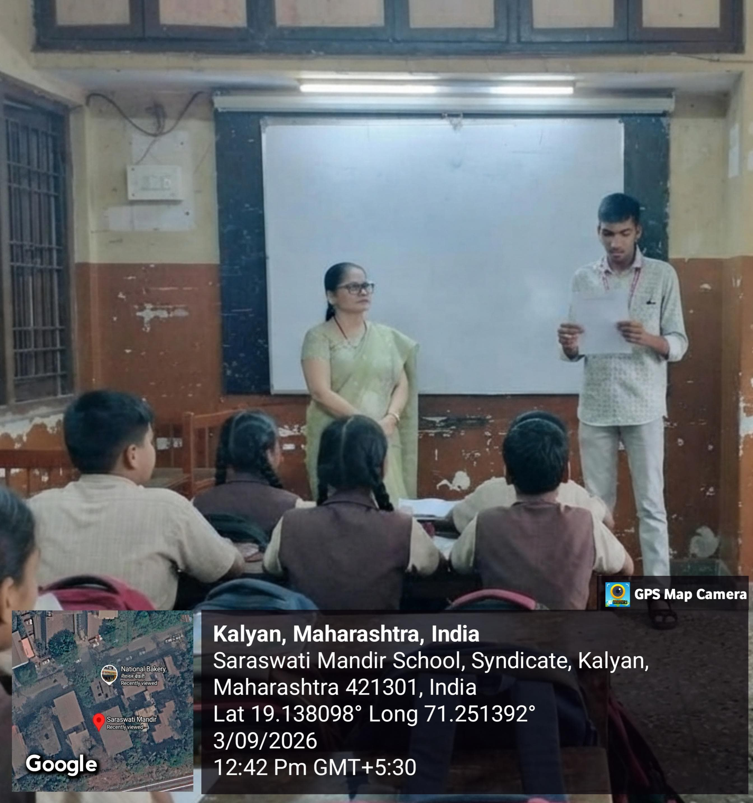
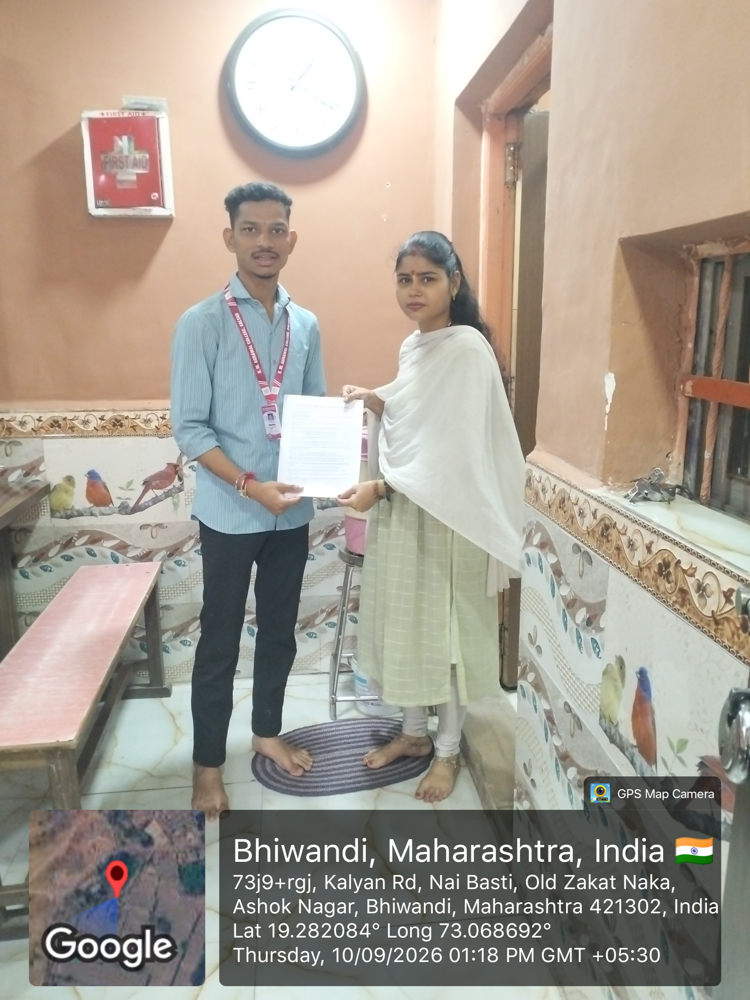
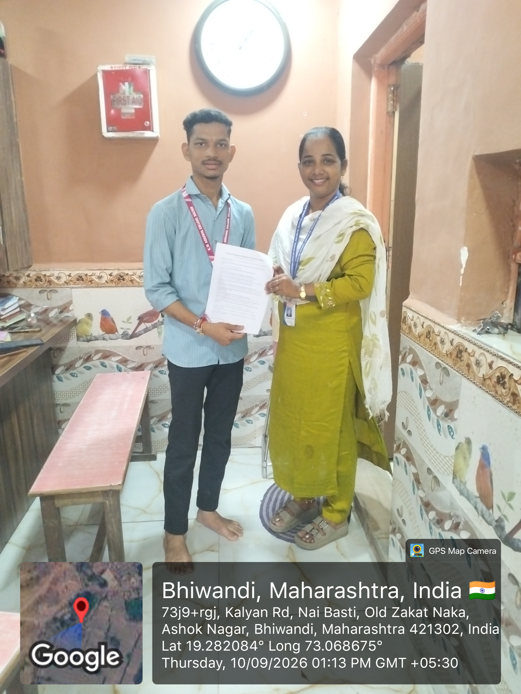

Visual documentation of our grassroots awareness workshops, classroom interactions, and faculty surveys conducted across schools in Kalyan and Bhiwandi.
Field visits in Kalyan & Bhiwandi
Classes 6th to 10th surveyed
Feedback on curriculum & labs
Interactive coding demo delivered
Authentic photographs captured during field sessions, survey administration, and teacher interviews.

Classroom Session📍 Saraswati Mandir School, Kalyan
Delivered an engaging presentation introducing students to computational thinking, flowchart logic, and block-based coding (Scratch). Students participated enthusiastically in solving logical puzzle challenges.

Faculty Survey📍 School Campus, Bhiwandi
Administering structured survey questionnaires with school teachers to identify existing curriculum bottlenecks, student curiosity levels, and institutional readiness for computer science training.

Curriculum Discussion📍 School Campus, Bhiwandi
In-depth discussion with educators regarding computer lab accessibility, student-to-computer ratios, and the recommendations of NEP 2020 to introduce coding literacy early in schooling.
Crucial takeaways gathered through direct field interaction with students and teachers.
Over 77% of students expressed immense excitement to learn programming, especially to create their own games, mobile apps, and animations.
Many schools face a computer scarcity with 2-3 students sharing one machine during lab hours, making personalized coding practice challenging.
94.6% of teachers strongly support school-level coding but highlighted the urgent need for dedicated IT faculty and structured training modules.